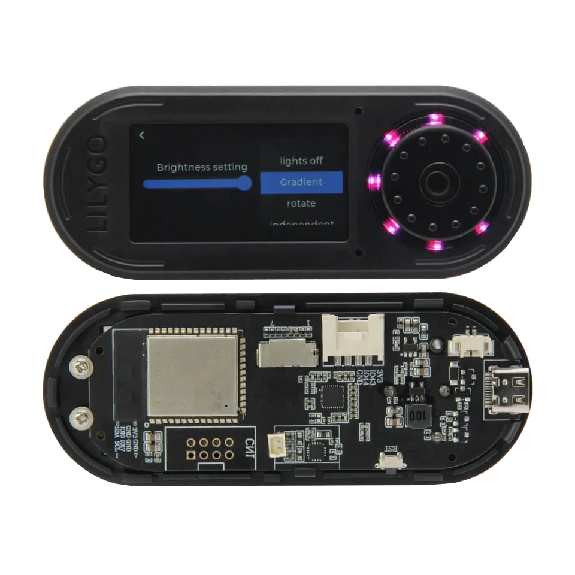

display-based bench
LILYGO T-Embed S3 for display-based ESP32 debugging
Use the LILYGO T-Embed S3 as a display-based ESP32-S3 bench target with encoder, screen, SD and Grove/Header access. It fits display-assisted serial, I2C, SPI and field-debugging workflows when the encoder, screen and onboard storage are useful.

Board-specific guide for LILYGO T-Embed S3 firmware, display-based workflows, wiring notes and ESP32-S3 hardware debugging.
compatibility
T-Embed S3 board overview
Use this page to judge T-Embed S3 for portable connector-based ESP32 Bit Pirate workflows.
practical tasks
T-Embed S3 supported workflows
T-Embed S3 supports connector-based UART, I2C, SPI and GPIO checks with display feedback for portable bench sessions.
Run CLI sessions, serial console checks and browser terminal workflows.
Use Grove/Header access for sensors, EEPROMs and external modules.
Probe SPI devices and exercise pins when the selected mapping exposes the needed signals.
Use onboard display feedback for visible state during bench workflows.
T-Embed S3 pin mapping and wiring notes
Keep display, encoder, audio and SD-related pins reserved. Use Grove/Header pins for targets and prefer DevKit or Dock when many unconstrained GPIO are required.
Always verify voltage and pin mapping before connecting a target. The ESP32-S3 side is not 5 V tolerant unless external level shifting or the Dock path is used correctly.
useful pages
T-Embed S3 useful next pages
Jump from T-Embed S3 to connector-oriented protocol, recipe and browser-tool pages.
Protocol modes
Useful recipes
Use the task guide for wiring, commands and troubleshooting.
Scan unknown I2C deviceUse the task guide for wiring, commands and troubleshooting.
Read SPI flash JEDEC IDUse the task guide for wiring, commands and troubleshooting.
Check logic levels before wiringUse the task guide for wiring, commands and troubleshooting.
Tools and hardware
Open Web Serial for T-Embed S3 CLI sessions after flashing.
Web FlasherFlash the matching T-Embed S3 build from a compatible browser.
Hardware ecosystemCheck docks, adapters and wiring hardware that pair with T-Embed S3.
Modules and target chipsBrowse chips and breakout modules that make sense with T-Embed S3 wiring.
board-specific answers
T-Embed S3 FAQ
Quick T-Embed S3 answers about connectors, display hardware, Web Serial and external module wiring.
Is T-Embed S3 different from T-Embed CC1101?
Yes. Use this page for the plain T-Embed S3 board. Use the T-Embed CC1101 page when the integrated Sub-GHz radio matters.
Is it good for generic GPIO work?
It is good for moderate connector-based workflows, while ESP32-S3 DevKit remains cleaner for labeled headers, Dock wiring and many simultaneous signals.
Can I use Web Serial with it?
Yes. Flash the matching build and open the Web Serial Terminal for CLI workflows.
Does it support Sub-GHz without the CC1101 variant?
Not through an integrated radio. Use an external CC1101 module or the T-Embed CC1101 board.
What should I check before wiring?
Confirm which pins are used by display, SD, audio and encoder hardware before connecting a target.

source project
T-Embed S3 in the ESP32 Bit Pirate ecosystem
ESP32 Bit Pirate on T-Embed S3 uses the display, controls and connectors for portable UART, I2C, SPI and GPIO workflows.